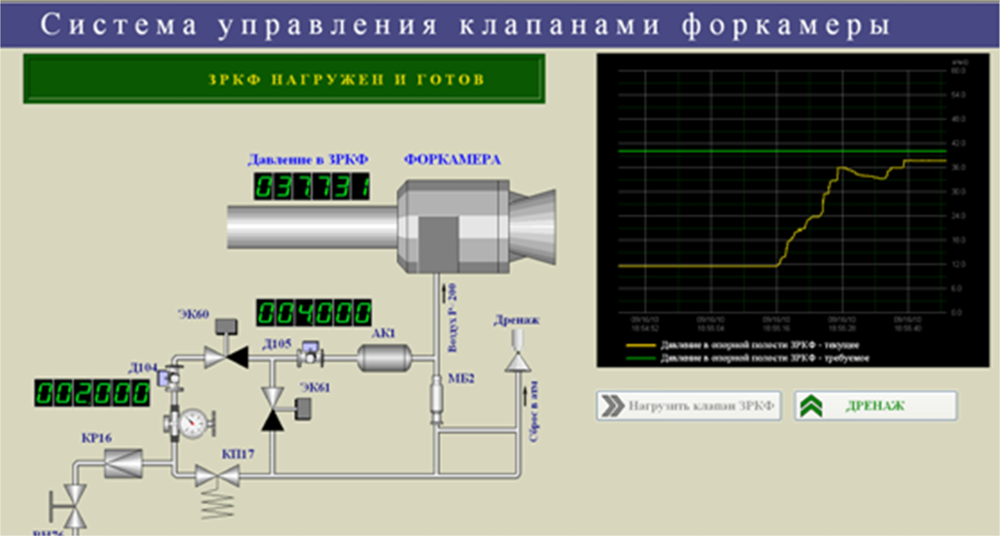
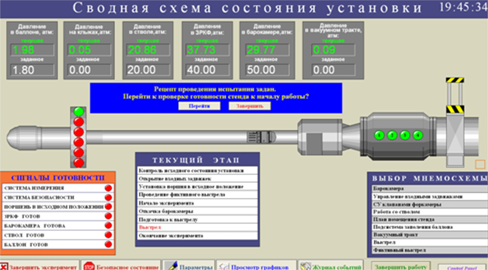
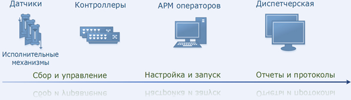

Структура разрабатываемых, проектируемых и создаваемых систем управления стендовым оборудованием
Разрабатываемые, проектируемые и создаваемые системы управления предназначены для приведения технологических и испытательных установок к рабочему режиму и обеспечения проведения технологических процессов и испытаний по заданному сценарию и циклограммам. Особенности создаваемых систем управления: - Резервирование на уровне датчиков и контроллеров; - Возможность автономной работы создаваемых систем управления без АРМ операторов; - Взаимодействие с измерительными ACTest-системами. Этапы создания программного обеспечения систем управления: - Проработка решений на базе единого подхода; - Проектирование базы данных под конкретный стенд; - Пользовательский интерфейс под рассматриваемую задачу. Для обеспечения быстрой разработки программного обеспечения систем управления при его создании используется единый подход, предусматривающий определенный набор информации, необходимой для создание качественного и надежного ПО СУ: - Определение списка информационных и рабочих параметров; - Согласование технологического или испытательного процесса; - Анализ нештатных ситуаций; - Составление информационной модели; - Проработка пользовательского интерфейса и диалога. Функциональность и эргономичность разрабатываемой, проектируемой и создаваемой системы управления, комфортность среды пользователя при работе с ней достигаются благодаря оптимальной архитектуре и “правильному” сочетанию аппаратных и программных средств обеспечения интерфейса с оператором. Разрабатываемое специализированное программное обеспечение систем управления на основе современных SCADA систем обеспечивает требуемый уровень функциональности и комфорта.